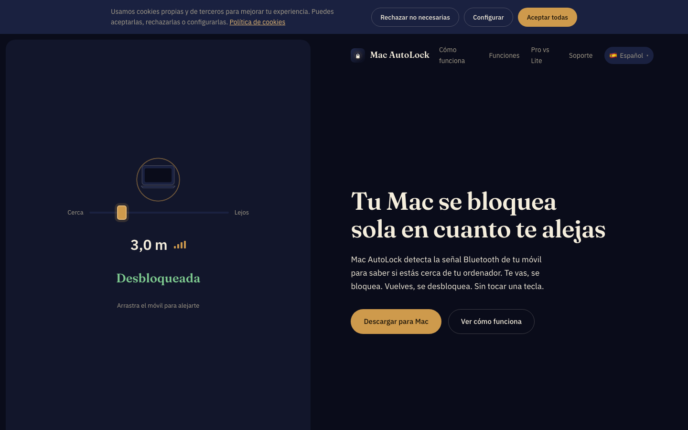

Transferir
Descarregar o último DMG — controlo total, sem limites da App Store
O que é
O Mac AutoLock vigia o sinal Bluetooth do seu telemóvel. Ao afastar-se da secretária, o sinal enfraquece e a sessão bloqueia; ao voltar, desbloqueia por si. O telemóvel é a chave — mais nada para levar, nada para memorizar.

Funcionalidades
Bloqueio e desbloqueio reais — desbloqueio automático da sessão com o Keychain (Pro).
Alertas de intrusão — foto silenciosa de quem toca no seu Mac na sua ausência (Pro).
Redes de confiança — nunca bloqueia em casa nem no escritório (lista branca de Wi-Fi).
App iOS companheira — bloqueie e desbloqueie o Mac à distância a partir do iPhone.
Motor de proximidade BLE — limiares de distância e temporização ajustáveis.
Macs e telemóveis ilimitados — um só plano cobre todos os seus equipamentos (Pro).
Edição Lite na App Store — o mesmo motor de proximidade dentro da sandbox da Apple.
Como usar
- 1Descarregue o DMG, arraste o Mac AutoLock para Aplicações e abra-o.
- 2Emparelhe o seu iPhone/Android por Bluetooth com o assistente (2 minutos).
- 3Ajuste a distância de bloqueio com o cursor — a app mostra o sinal em direto.
- 4Afaste-se: quando o sinal cai o suficiente, a sessão bloqueia sozinha.
- 5Opcional: marque o seu Wi-Fi como rede de confiança para nunca bloquear em casa.
Edições e preços
| Lite (App Store) | Pro (DMG) | |
|---|---|---|
| Motor de proximidade | ✓ | ✓ |
| Bloqueio de sessão | Padrão macOS | ✓ + desbloqueio automático |
| Foto de intrusão | — | ✓ |
| Redes de confiança | — | ✓ |
| Sandbox | ✓ | — |
| Atualizações | App Store | Sparkle automático |
Requisitos
macOS recente com Bluetooth LE · iPhone ou Android com BLE para proximidade · Assinado e notarizado pela Apple (DMG).
O que contém este repositório
MacAutoLock.dmg— instalador Pro assinado + notarizadoMacAutoLock-<versão>.zip— arquivo de atualização Sparkle (EdDSA) para o auto-updater*.delta— atualizações delta Sparkle entre versões
Perguntas frequentes
Porque existem duas edições?
A sandbox da App Store não permite acesso à câmara nem desbloqueio automático real — o DMG Pro (fora da sandbox) tem todas as funções, o Lite o bloqueio padrão.
Gasta a bateria do telemóvel?
Não — usa Bluetooth Low Energy. O consumo extra é praticamente nulo.
E se o Bluetooth desligar?
A app deteta a perda de sinal e aplica a política configurada (bloqueio com tolerância, notificação…).
Suporte
- Site: www.macautolock.com
- Email: support@it-systems.es